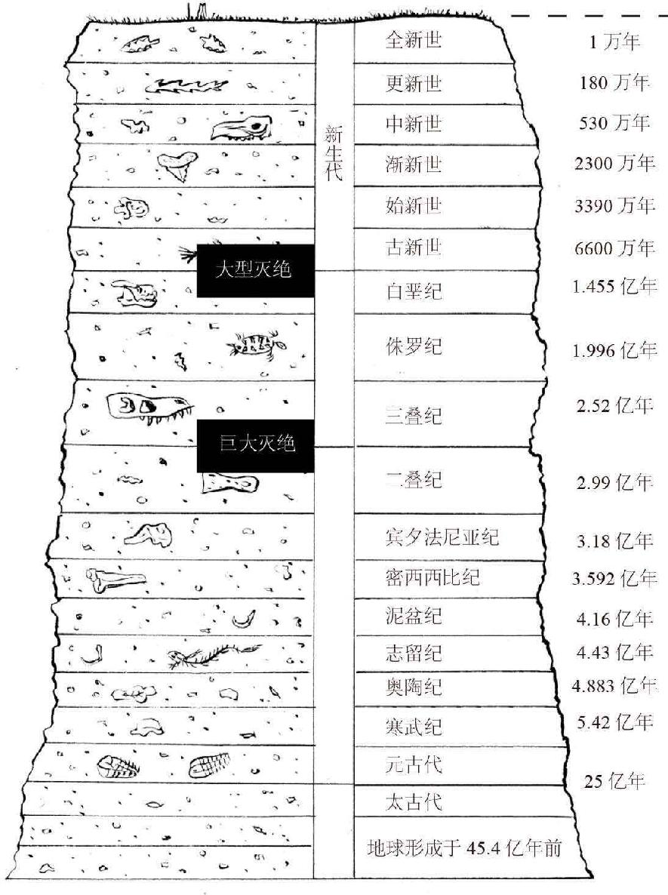

让我们再回到对地球的探讨。地球科学家、地质学家和古生物学家常用一种叫“地质时间表”的东西来描述有关地球历史的时间和事件。它将时间与地层学联系起来，后者是研究地壳表层成层岩石的学科。
有很多绝好的成层样本可以证明地球的历史很悠久。在塞浦路斯的白垩层、美国犹他州令人惊艳的科罗拉多高原、法国阿尔卑斯山正面的裸露地层，以及墨西哥拉巴斯附近神奇的成层岛等地，我们都能找到例证。
描述地质时间的地质年代单位都相当长，例如宙、代、纪、世和期。
普遍认为地球有45.4亿年历史，我们的老朋友锆石是已知的最古老的矿物质，研究人员于冥古宙隐生代地层发现了它。冥古宙隐生代是月亮和地球形成的时期。5亿至6亿年之后，地球进入始太古代，简单的单细胞生物开始出现，我们在微体化石中找到了其出现的证据。微体化石是小于4毫米的化石，通常小于1毫米，只能在光学或电子显微镜下进行研究。
继续向前跳转至元古宙，地质迹象表明地球大气开始含氧（尤其是在古元古代，约20.5亿年前），第一个复杂单细胞生物——原生生物于18亿年前诞生。

又过了12亿年，第一批多细胞动物（蠕虫、海绵、软体胶状生物）化石于新元古代（约6.35亿年前）出现，这些动物又在漫长的古生代（距今2.55亿到5.41亿年前）进化成更复杂的鱼类生物。古生代末期，包括北美洲、欧洲、亚洲、南美洲、非洲、南极洲和澳大利亚在内的盘古大陆形成。各种爬行动物和两栖动物开始四处漫游，基本植物群、苔藓和裸子植物已经进化，大批海洋生物也逐渐在浅礁涌现。
自此进入中生代。中生代的三叠纪、侏罗纪和白垩纪时期（距今2.52亿年到7 200万年前），恐龙、原始哺乳动物和鳄目出现，之后被子植物和多样化的昆虫也随之出现。至白垩纪末期，又出现许多新的恐龙物种（尽管存在时间并不久），现在的鳄鱼和鲨鱼类物种等也大量繁殖。原始鸟类取代了翼龙，原始有袋动物也出现了。这一时期，大气中的二氧化碳含量开始接近地球目前的水平。
接下来我们就来到了人类所处的地质时代——新生代，该地质时代始于6 600万年前，常被人们称为“哺乳动物的时代”。新生代早期，恐龙灭绝（下文会介绍更多相关内容）、哺乳动物走向多样化。然而还需要等待4 000多万年，我们进化论意义上的祖先——第一批类人猿才会出现。
在20万年前的更新世，第一批解剖学意义上的现代人类开始活动，在5万年前的全新世（目前我们仍处于该世），人类才尝试着摆弄石器工具。
简而言之，地球很古老，人类很年轻。不妨换个角度，试把地球想象成一个24小时制的钟表，午夜前40秒，即23:59:20，第一个人类终于出现。
恐龙怎么了？
目前普遍认为，约6 550万年前，耸人听闻的“白垩纪—第三纪灭绝事件”导致大量恐龙灭绝。
然而，直到今天，该事件的根本原因仍没有定论。研究人员提出了各种理论，比如小行星或流星撞击地球、长时间火山爆发严重遮挡了抵达地球的阳光等，改变了地球生态系统。
无论是何种原因，该事件留下了一个名为“白垩纪—古近纪界线”（K–T界线或K–pg界线）的地质特征。恐龙（不含鸟类）的化石就躺在K–T界线的下层，这表明它们就是在这一事件发生时灭绝的。人们在此界线之上也找到少量恐龙化石，他们的解释是化石在最初的位置遭到侵蚀，被带离了原本的地点，然后沉积在较年轻的沉积层。在美国特立尼达湖、科罗拉多州国家公园以及加拿大阿尔伯塔省德兰赫勒荒地等区域或国家公园，我们可以看到K–T界线的裸露区域。